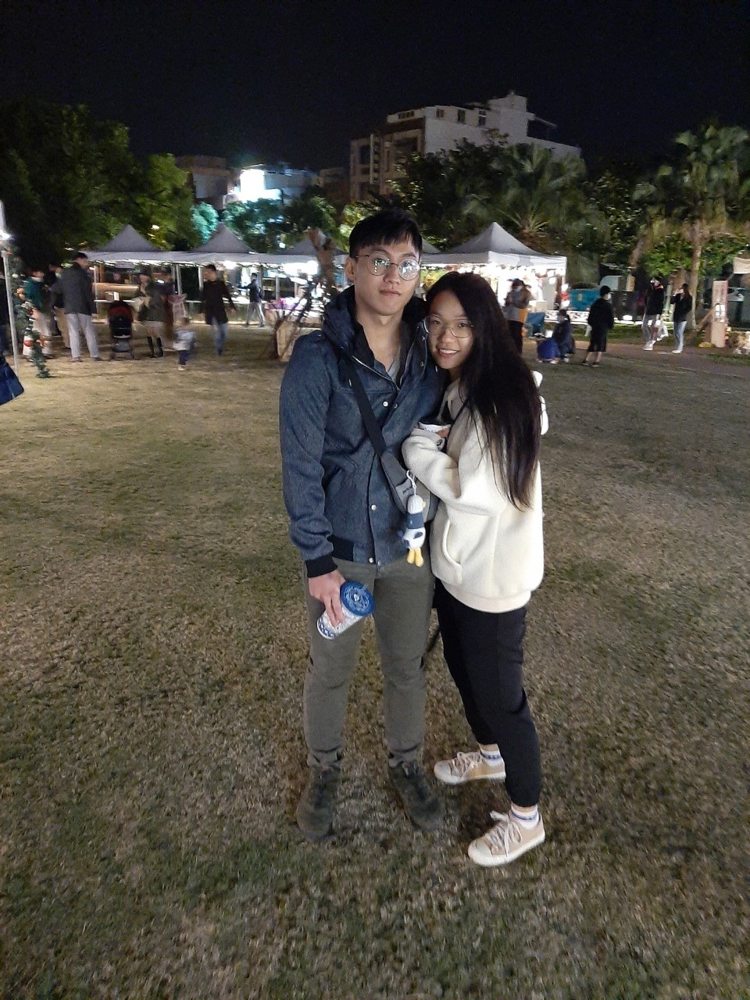
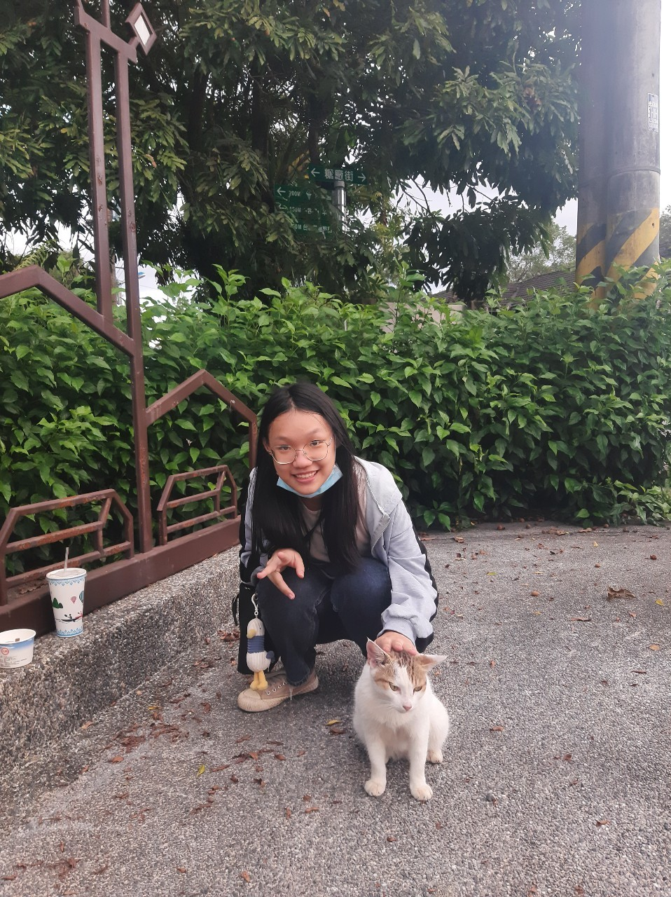
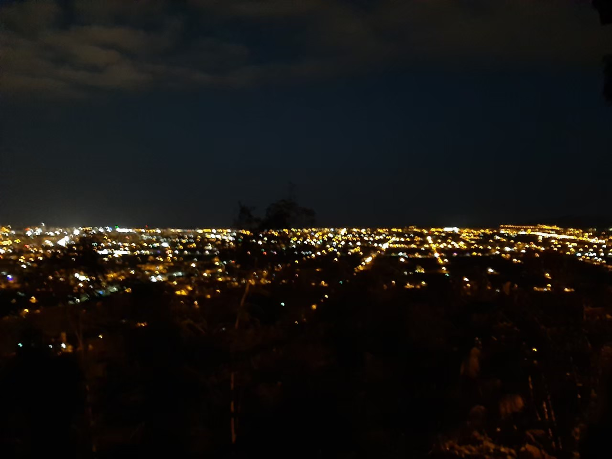
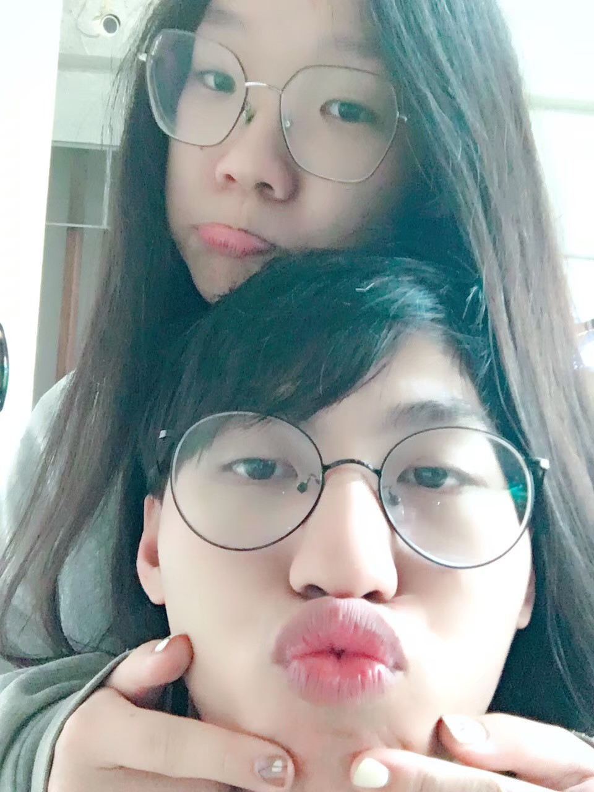

歡迎來到，專屬於我們的空間
這裡存放著有關我們,滿滿的回憶
2020年的11月23日,我們開啟了一段,只專屬於我們的旅程
很快的,我們迎來了我們的第一個聖誕節
第一次去花蓮耶誕城
聖誕節出門玩遇到可愛的狗狗

跟可愛的狗狗一起拍照
漂亮的風景還有最可愛的你和我

記得那時候我們逛的太晚,天色漸漸暗了下來,怕黑的你拉著我的手,我們試圖前往太魯閣遊客中心
我們走過了隧道,穿過不同的馬路,最後終於抵達了那裏,但是已經太晚了沒有遊覽車,所以我們只好叫計程車坐回學校,現在回想起來,真是一段特別的旅程
寒假回來的我們,迫不及待的跑去宜蘭玩
火車上的自拍
一起去泡腳讓魚吃腳腳
一開始還覺得很癢呢,但後來就覺得很舒服,泡得很自在
然後我們還交換眼鏡戴

其實你戴我的眼鏡還蠻好看的

然後我們還一起去爬山

讓你穿著我的外套


看看你笑得多開心

然後我們還一起去龍潭湖,去的時候雖然已經是下午,而且是陰天,但是還是很美,而且那裏有很多鳥類
雖然照片不多,但是我把你拍的很美喔

看看我把你的腳拍得有多修長

你很喜歡拍照的時候閉眼睛喔


然後是我們一起去住民宿的照片,那時候我說我想看你畫眉毛,你說你很久沒有畫了,我就讓你畫畫看


結果一不小心就畫出我的男神了


離開的時候因為我的惡作劇害妳哭了

你跟我說你很不喜歡那樣的玩笑,所以從那以後我就不開那樣的玩笑,害寶貝你哭是我不對,對不起
我們一起去吃早餐

你看你又笑的那麼開心

一起去吃下午茶
在宜蘭的最後一天,我們一起去林業園區

還請好心的路人幫我們拍了好幾張照片


我真的好喜歡這些照片,你也是嗎


在宜蘭的這三天,我真的好快樂,我想你也是一樣的吧,第一次一起前往別的城市,一起探索陌生的地方,在那裏留下我們的足跡,留下相處的回憶
除了照片上的,我也喜歡你帶我去吃的白糖粿,吃了一次就讓我愛上那個東西,謝謝你陪我一起旅遊
一起去光復糖廠
遇到了不怕人的阿心喵
">一邊吃冰棒的你和可愛的阿心喵
拍拍阿心喵的屁屁
和阿心喵合照

更多可愛帥氣的阿心喵
還記得那時候我們一直在想著要不要偷偷把阿心喵帶回來養呢,雖然最後沒有,但是,阿心喵,請你等著,我們還會再一起回去看你的
然後我們還一起去了雲山水
那裏的風景好漂亮啊

和漂亮的風景一起拍照
喜歡你笑的那麼開心,可愛的你跟這樣的風景那麼相配
這麼美麗的地方,有機會再一起去吧
晚上的我們,一起去楓林步道看夜景
在這裡,可以看到整個花蓮市呢
夜晚的楓林步道對於怕黑的我們有點恐怖,所以我們欣賞完夜景後就快速離去了,但那裏的確是很適合情侶一起去的地方呢
然後這是學期中的我們,一起坐在集賢聊天
無聊的你開始拿起手機拍照
換我掌鏡了!
你真的好可愛喔!!
和你在一起真的好快樂